Les coulisses de gaseUn émulateur Sega Mega Drive / Genesis en RustOctobre 2026
Une Mega Drive qui se lit.
Comment un émulateur a été construit pour être compris : un crate par puce, chaque processeur vérifié contre des millions de cas de test enregistrés, et une règle voulant que chaque chemin rapide garde la version lisible à ses côtés.
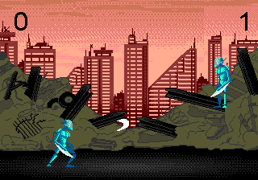
- Crates : un par puce, puis l’application, le ZIP et les coquilles 12
- Dépendances externes du cœur 0
- Plateformes : ordinateur, navigateur, Android, iOS 4
- Cas de test Z80 réussis 1 604 000
- Cas de test 68000 exécutés 1 310 060
- Pull requests pour en arriver là 33
- Accélération obtenue par le profilage 1,5–1,9×
- Blocs
unsafe, tous dans le point d’entrée pour téléphone 2
Est-ce faisable ?
Avant tout code, une courte étude s’est demandé si un émulateur Mega Drive en Rust était un projet raisonnable, et ce qu’il devait faire passer en premier.
La réponse fut oui, pour des raisons qui ont façonné tout ce qui a suivi. La Mega Drive est l’une des machines les mieux documentées de son époque : des émulateurs libres et mûrs comme Genesis Plus GX, BlastEm, Exodus et clownmdemu existent, et à eux tous ils ont mesuré et consigné presque chaque comportement du matériel. Rien n’était à deviner ; il fallait comprendre, et écrire clairement.
Les objectifs ont été classés, et ce classement comptait. La pédagogie d’abord : quelqu’un devait pouvoir ouvrir le source et apprendre comment fonctionne la console. Puis la performance, la compatibilité, le confort d’utilisation, et enfin les bonnes pratiques, avec peu de dépendances. Quand deux objectifs tiraient en sens contraire, le mieux classé l’emportait.
Rust convenait à ces objectifs. L’arithmétique matérielle y est explicite (wrapping_add, u16::from_be_bytes), si bien que le code montre ce que la puce fait de chaque bit. Les génériques à répartition statique permettent à un cœur de processeur de dialoguer sans surcoût avec la carte mémoire tout en restant un crate autonome. Et #![forbid(unsafe_code)] s’est révélé réaliste : rien ici n’en a besoin.
La performance n’était pas le risque
Un 68000 à 7,67 MHz exécute un à deux millions d’instructions par seconde. Un simple interpréteur en Rust s’en acquitte avec quelques pour cent d’un cœur moderne. L’étude en a conclu que la vitesse pouvait être dépensée en exactitude et en agréments comme le retour arrière. Les vrais risques étaient ailleurs : l’exactitude du 68000, les astuces de timing du VDP, le son du YM2612, le matériel exotique de certaines cartouches, et la synchronisation de l’audio et de la vidéo sans craquements. Chacun a ensuite eu son propre chapitre.
| Partie | Crate | Estimation | Aujourd’hui | Comparaison |
|---|---|---|---|---|
| 68000 | gase-m68k | 3 000–4 000 | 4 618 | |
| Z80 | gase-z80 | ~2 000 | 2 517 | |
| VDP | gase-vdp | 1 500–2 000 | 3 008 | |
| YM2612 + PSG | gase-sound | ~1 150 | 3 138 | |
| Bus, E/S, cartouche | gase-core | ~800 | 3 687 | |
| Frontal | gase | ~600 | 2 913 |
La machine
Deux processeurs qui ne partagent que quelques portes, une puce vidéo dotée de sa propre mémoire, deux puces sonores, et un quartz qui donne la cadence à tous.
Le 68000 fait tourner le jeu. Il voit la cartouche, 64 Kio de RAM de travail, les ports des manettes et les deux ports de la puce vidéo dans un même espace d’adressage de 24 bits. Le Z80, un ordinateur 8 bits à part entière doté de 8 Kio de RAM à lui, pilote les puces sonores ; le 68000 peut l’arrêter, charger un programme dans sa RAM et le relancer, et le Z80 peut regarder dans la mémoire du 68000 par une fenêtre de 32 Kio.
Le VDP ne s’adresse jamais comme une mémoire. Ses 64 Kio de VRAM, sa palette (CRAM) et sa table de défilement vertical (VSRAM) ne sont accessibles que par un port de contrôle et un port de données, ce qui explique qu’une si grande part du code d’un jeu consiste à alimenter ces deux ports au bon moment.
Horloge maître gase-core · system.rs
53,693175 MHz sur les consoles NTSC (53,203424 MHz en PAL). Chaque puce tourne à une fraction de cette fréquence, aussi gase compte-t-il le temps en cycles d’horloge maître.
Motorola 68000 gase-m68k
Le processeur principal, à maître ÷ 7 ≈ 7,67 MHz. Registres de 32 bits, bus de données de 16 bits, 24 lignes d’adresse. Fait tourner le jeu.
Cartouche gase-core · cartridge.rs
La ROM en
000000, plus une SRAM sur pile ou une EEPROM série pour les sauvegardes, et le mappeur SSF2 pour les ROM de plus de 4 Mio.RAM de travail gase-core · bus.rs
64 Kio de
E00000àFFFFFF, en miroir. La pile y croît vers le bas depuis le sommet.E/S gase-core · io.rs
Le registre de version (région, PAL/NTSC) et les ports des manettes, y compris le protocole minuté de la manette à 6 boutons.
Arbitre de bus gase-core · bus.rs
Permet au 68000 de prendre le bus du Z80 (
A11100) ou de le maintenir en reset (A11200), et donne au Z80 une fenêtre par banques sur l’espace du 68000.VDP, Sega 315-5313 gase-vdp
Deux plans de tuiles à défilement, une fenêtre et 80 sprites, 64 couleurs à l’écran sur 512. Une ligne de balayage toutes les 3 420 périodes d’horloge maître.
VRAM, CRAM, VSRAM gase-vdp
64 Kio de tuiles et de tables, 64 couleurs sur neuf bits, 40 valeurs de défilement vertical. Seul le VDP y accède directement.
Zilog Z80 gase-z80
Le processeur du son, à maître ÷ 15 ≈ 3,58 MHz, avec 8 Kio de RAM privée. Envoie en flux les données musicales et les échantillons de batterie aux puces sonores.
RAM son gase-core · bus.rs
8 Kio à l’adresse Z80
0000, en miroir à2000. C’est là que vit le pilote sonore.Yamaha YM2612 gase-sound
Six canaux FM de quatre opérateurs chacun, un échantillon stéréo toutes les 144 périodes de son horloge (≈ 53 267 Hz). Le canal 6 peut jouer des échantillons 8 bits.
PSG, SN76489 gase-sound
Intégré au VDP : trois ondes carrées et un générateur de bruit, à maître ÷ 15.
Un crate par puce
Le source est organisé comme la carte mère. Vous pouvez lire le Z80 sans savoir qu’un VDP existe.
Chaque puce vit dans son propre crate, avec une documentation de module rédigée comme un petit cours sur cette puce : les registres et les modes d’adressage du 68000, les drapeaux non documentés du Z80, les formats de tuiles du VDP, la synthèse FM telle que le YM2612 la calcule réellement. Les crates ont été construits en parallèle, sur des branches séparées, avant que rien ne les relie.
Ce qui leur permet de rester séparés, c’est un petit trait. Chaque processeur dit ce dont il a besoin du monde extérieur, et rien de plus :
// gase-m68k: everything the 68000 needs to know about the console.
pub trait Bus {
fn read_byte(&mut self, addr: u32) -> u8;
fn read_word(&mut self, addr: u32) -> u16;
fn write_byte(&mut self, addr: u32, value: u8);
fn write_word(&mut self, addr: u32, value: u16);
// interrupt acknowledge, RESET, TAS ... (with defaults)
}
impl M68k {
/// Runs one instruction; returns the 68000 clock cycles it took.
pub fn step<B: Bus>(&mut self, bus: &mut B) -> u32 { … }
}Comme step est générique, le compilateur en produit une copie spécialisée pour la vraie carte mémoire de la console, où les accès mémoire sont des appels directs et souvent intégrés en ligne. Les tests confient exactement le même processeur à un simple tableau de RAM.
Un choix de conception découle directement des règles d’emprunt de Rust. Pendant qu’il s’exécute, le 68000 détient un emprunt mutable du matériel ; il ne peut donc pas vivre aussi à l’intérieur du matériel. Les processeurs se trouvent par conséquent à côté de Hardware dans la structure Genesis, et le Z80 atteint le même matériel par une fine enveloppe qui applique la carte mémoire propre au Z80. La contrainte a fini par documenter la machine : deux processeurs, un seul ensemble de périphériques partagés.
| Crate | Ce que c’est | Ce qu’enseigne sa documentation |
|---|---|---|
gase-savestate | Un minuscule format binaire | Sérialiser un état dans un ordre fixe, sans schéma |
gase-m68k | Motorola 68000 | Les registres, les 12 modes d’adressage, la file de préchargement, les exceptions, le décompte des cycles |
gase-z80 | Zilog Z80 | Les pages de préfixes, les drapeaux X/Y non documentés, WZ (MEMPTR), le verrou Q, les modes d’interruption |
gase-vdp | VDP Sega 315-5313 | Tuiles, tables de noms, sprites, priorité, créneaux d’accès, la FIFO, trois sortes de DMA |
gase-sound | YM2612, SN76489, rééchantillonneur | Synthèse FM, tables log-sinus, enveloppes, l’effet d’échelle, rééchantillonnage par sinc fenêtré |
gase-core | La console | Cartes mémoire, l’ordonnanceur, les cartouches, l’EEPROM en I²C, les sauvegardes d’état, le retour arrière |
gase | Le programme | Cadence des images réglée sur l’audio, un débogueur dessiné dans un tampon de pixels, PNG et WAV écrits à la main |
Prouver les processeurs
Un émulateur de processeur est soit exactement juste, soit discrètement faux. Le seul moyen de le savoir est de le comparer, instruction par instruction, à des enregistrements de la vraie puce.
Un vecteur de test, c’est une instruction figée. Il consigne chaque registre et les octets de mémoire concernés avant l’instruction, les mêmes après, et l’activité du bus entre les deux. On exécute l’instruction depuis l’état « avant » ; si un seul bit ou un seul cycle diffère de l’état « après », le test échoue.
En voici un vrai, le premier des 1 000 cas de l’opcode Z80 80, ADD A,B, abrégé :
// target/test-vectors/z80/80.json, case "80 0000" (SingleStepTests)
initial: pc=51399 a=81 b=92 f=167 r=112 q=0 ram[51399]=128 (the opcode)
final: pc=51400 a=173 b=92 f=172 r=113 q=172
cycles: 4 // one opcode fetch: read at 51399, then refresh81 + 92 = 173. Les drapeaux passent à 172 : signe et dépassement levés (81 + 92 ne tient pas dans un octet signé), plus des copies non documentées des bits 5 et 3 du résultat. Le registre de rafraîchissement R avance d’un cran à chaque lecture d’opcode, et le verrou caché Q retient les drapeaux que cette instruction a écrits : SCF et CCF le liront plus tard. gase modélise tout cela.
Le cœur Z80 réussit les 1 604 000 cas de SingleStepTests, en comparant chaque registre, cachés compris, la RAM, les entrées-sorties sur ports et le nombre de cycles. Il réussit aussi ZEXDOC et ZEXALL, les exerciseurs classiques qui tournent sur le processeur lui-même et calculent une somme de contrôle sur les résultats de millions d’opérations.
Le 68000 est plus difficile : des dizaines de modes d’adressage, des nombres de cycles exacts, une file de préchargement de deux mots, et des exceptions qui interrompent une instruction à mi-chemin. gase modélise exactement la file de préchargement et compte le temps comme la puce le dépense, quatre cycles par accès au bus plus le travail interne, si bien que les décomptes correspondent aux tables de Motorola par construction et non par consultation.
Quand deux références se contredisent
Les deux suites 68000 se contredisent par endroits, et le cœur a dû choisir son camp. Il suit la suite générée à partir du 68000 de MAME, modélisé au niveau du microcode, qui s’accorde aussi avec le manuel de Motorola, et il en réussit les 310 000 cas. Les cas de Tom Harte ne sont excusés que lorsqu’ils relèvent d’une catégorie connue et documentée et qu’ils échouent : le compteur ordinal empilé et les nombres de cycles des erreurs d’adresse (environ 178 000 cas), les drapeaux des décalages supérieurs à la taille de l’opérande, le timing de ADDQ.L vers un registre d’adresse, quelques cas limites de division, LINK A7, et deux vecteurs corrompus. Avant de passer au modèle microcode des erreurs d’adresse, le cœur réussissait environ 99,5 % de la suite de Tom Harte.
Cette décision sur les erreurs d’adresse, un recoin que les jeux du commerce n’atteignent jamais, a compté plus tôt que prévu. Voir le chapitre 08.
Premières images
Quatre puces validées ne font pas encore une console. Il faut que quelque chose décide qui s’exécute, et quand.
L’ordonnanceur de gase-core fait tourner la console une ligne de balayage à la fois. Au début de chaque ligne, le VDP la dessine. Puis le 68000 exécute des instructions jusqu’au prochain événement de cette ligne (l’interruption verticale, le retour horizontal, la fin de la ligne), et après chaque instruction du 68000 le Z80 rattrape le même instant d’horloge maître. Les deux processeurs ne s’écartent jamais de plus d’une instruction.
Les puces sonores ne sont pas du tout avancées dans cette boucle. Elles sont mises à jour paresseusement : seulement quand un processeur leur écrit, pour que l’écriture tombe exactement sur le bon échantillon, et à la fin de l’image. Quand personne n’écoute, le rattrapage ne coûte rien.
Les premiers vrais programmes furent cinq ROM de test sous licence libre, choisies pour couvrir différentes parties de la machine. Chacune est devenue un test de non-régression : exécution pendant un nombre fixe d’images, avec des appuis de boutons scriptés, puis calcul d’une empreinte de l’image. Une empreinte n’était enregistrée qu’une fois l’image vérifiée à l’œil.
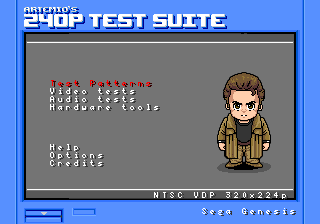
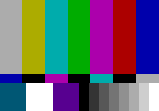
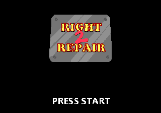
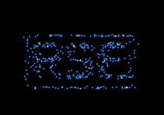
crates/core/tests/test_roms.rs
| Cas de non-régression | Images |
|---|---|
| 240p Test Suite, menu principal | 300 |
| 240p Test Suite, PLUGE (deux appuis sur A) | 400 |
| Mire de test genmd-imgrom | 120 |
| Airstriker, logo SEGA | 60 |
| Airstriker, menu principal (tolérant) | 700 |
| Right 2 Repair, écran titre | 600 |
| The Spiral | 1 200 |
Chaque cas se termine par une empreinte FNV-1a de 64 bits de l’image.
Dessiner une image
Il n’y a pas de tampon d’image où dessiner. Le VDP construit chaque ligne à la volée à partir de petites tuiles, de cartes de tuiles et d’une liste de sprites.
Tout ce qui apparaît à l’écran est fait de tuiles : 8 × 8 pixels, quatre bits par pixel, 32 octets chacune. Les quatre bits d’un pixel désignent l’une des 16 couleurs de l’une des quatre palettes ; la couleur 0 est transparente. Deux plans, A et B, sont des cartes de tuiles défilantes dont chaque entrée choisit une tuile, une palette, des retournements horizontal et vertical et un bit de priorité. Une fenêtre peut remplacer le plan A dans un rectangle fixe, pour les barres d’état qui ne doivent pas défiler. Par-dessus viennent jusqu’à 80 sprites, rangés dans une liste chaînée.
Voici une véritable image de Right 2 Repair, démontée. Chaque couche a été dessinée par le moteur de rendu de gase lui-même, les autres couches masquées : c’est donc exactement ce que le VDP combine.
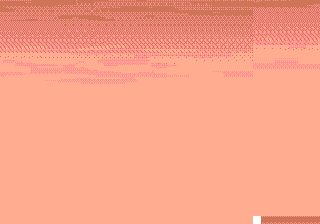
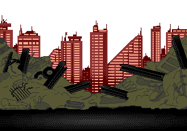
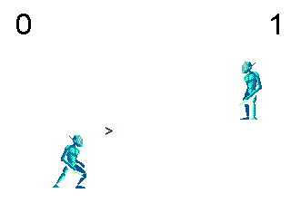
scripts/docs-shots, qui relance le moteur de rendu du VDP sur une copie de la console en masquant les autres couches.D’où viennent les pixels
Tout réside dans les 64 Kio de VRAM du VDP : les tuiles, les deux tables de noms, la carte de la fenêtre, la table des sprites et la table de défilement horizontal, à des adresses que le jeu choisit au moyen de registres. Ci-dessous, les 2 048 emplacements de tuiles de la VRAM à cet instant, chacun dans la palette avec laquelle les plans ou les sprites l’utilisent, et les 64 couleurs de la CRAM.
En regardant de près, le puzzle apparaît : la ligne d’horizon et les gravats découpés en tuiles, le ciel tramé, les lettres de la police, les étapes d’animation des combattants. Les rangées rayées vers le bas ne sont pas du tout des images. Ce sont les tables de noms et la table des sprites, lues comme si c’étaient des tuiles : un rappel que la VRAM est une seule mémoire partagée, et que ce sont les registres qui décident du sens de chaque partie.
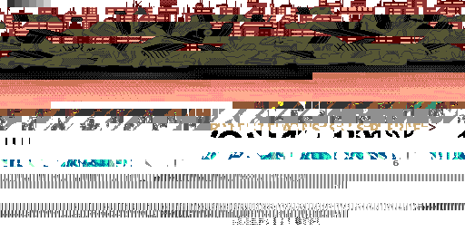
Ligne par ligne
gase produit une ligne de balayage à la fois, comme le matériel. Pour chaque ligne, il dessine le plan B, puis le plan A ou la fenêtre, dans des tampons d’un octet par pixel (priorité, palette, couleur), détermine quels sprites croisent la ligne (au plus 20 par ligne et 320 pixels de sprites en mode 320 pixels ; au-delà, le matériel les abandonne), puis compose les trois tampons selon la priorité. Les écritures de registres qu’un jeu effectue pendant le retour horizontal apparaissent à la ligne suivante : c’est sur quoi reposent les effets de balayage comme les lignes d’eau et les changements de palette ligne par ligne.
Faire du son
La voix de la Mega Drive, c’est la modulation de fréquence : une onde sinusoïdale qui en fait plier la phase d’une autre. La puce qui s’en charge n’a pas de multiplieur.
Un opérateur est un oscillateur sinusoïdal doté d’une enveloppe de volume. Seul, il produit un son pur et terne. L’astuce, découverte par John Chowning en 1973 et cédée sous licence à Yamaha, consiste à ajouter la sortie d’un opérateur à la phase d’un autre. Le modulateur fait osciller la porteuse d’avant en arrière et crée des bandes latérales : lorsque les deux fréquences sont dans un rapport simple, ces bandes sont des harmoniques et le résultat est un timbre riche et accordé ; des rapports irréguliers donnent des cloches et du métal. Le volume du modulateur, l’indice de modulation, règle la brillance.
Essayez. Voici la formule, tracée en direct : out = sin(ωc·t + I · sin(ωm·t)).
Un sinus sans multiplier
Le YM2612 n’a pas de multiplieur. Il stocke −log₂(sin) pour un quart d’onde dans une table de 256 entrées, y ajoute l’atténuation de l’enveloppe (déjà en décibels, donc déjà un logarithme), et reconvertit la somme en valeur linéaire avec une table de 256 puissances de deux et un décalage. gase construit les deux tables à partir de formules, et ses tests les vérifient par rapport à des valeurs lues sur la puce elle-même.
Vient ensuite le côté analogique. Le YM2612 des premières consoles a un DAC défectueux qui laisse fuir un faible niveau depuis les canaux silencieux, rendant les notes douces plus fortes et plus granuleuses. Cet « effet d’échelle » fait partie du son de la Mega Drive, aussi gase l’émule-t-il par défaut. Le PSG, de type SN76489, ajoute trois ondes carrées et un générateur de bruit fondé sur un registre à décalage de 16 bits. Enfin, un rééchantillonneur à sinus cardinal fenêtré convertit les ≈ 53 267 échantillons par seconde natifs de la puce en 48 000, ce qu’attend votre carte son, en ajustant le rapport d’au plus un demi pour cent pour garder le son et l’image synchrones sans sauter d’image.
--wav, canaux gauche et droit mélangés.L’adresse impaire
Un shoot’em up amateur plantait dans gase et fonctionnait ailleurs. L’émulateur avait raison, et le prouver a demandé une trace, un vidage de registres et un seul bit.
Airstriker démarrait jusqu’à son logo SEGA puis, quelques secondes plus tard, s’arrêtait sur un écran noir avec un message de son propre environnement d’exécution : 68K Address Error. C’est un petit jeu gratuit écrit en BasiEgaXorz, un compilateur BASIC pour la Mega Drive, et l’on sait qu’il fonctionne dans les émulateurs populaires. Le premier suspect était donc gase.
Une erreur d’adresse, c’est le 68000 qui refuse un accès mot ou long à une adresse impaire. La puce n’a pas de ligne d’adresse A0. Un accès 16 bits couvre toujours deux octets à une adresse paire, sélectionnés par des signaux d’octet haut et d’octet bas : il est donc impossible de demander un mot qui commence sur un octet impair. Le processeur abandonne l’instruction en cours de route et prend l’exception 3, en empilant un bloc de 14 octets qui décrit l’accès fautif. gase l’implémente exactement, car les vecteurs de test dérivés de MAME vérifient ces blocs bit pour bit.
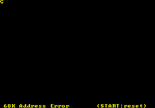
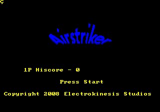
--no-address-errors : l’écran titre.La trace montre les dernières instructions avant la faute, à l’image 358. Le code veut prendre le bus du Z80, ce qui revient à écrire $0100 en $A11100. Il charge l’adresse dans D0, la copie dans A6, charge la valeur, puis copie le pointeur dans A0 pour l’écriture :
; gase --headless --frames 359 --trace 20000000 Airstriker.md (registers before each instruction)
00F980 move.l #$A11100,d0 D0=00000000 A0=00FF026E
00F986 movea.l d0,a6 D0=00A11100 A0=00FF026E ; A6 = $A11100, the Z80 bus request
00F988 move.l #$100,d0 D0=00A11100 A0=00FF026E
00F98E movea.l d6,a0 D0=00000100 A0=00FF026E ; copies D6, not A6
00F990 move.w d0,(a0) D0=00000100 A0=2FFFFFFF ; a word write to an odd address
00254A movea.l #$2674,a0 D0=00000100 A0=2FFFFFFF ; exception 3: the address-error handlerD6 contenait $2FFFFFFF : l’écriture visait donc une adresse impaire, et un vrai 68000 déclencherait une faute exactement ici. Les octets de l’instruction dans la ROM racontent la suite. MOVEA.L D6,A0 et MOVEA.L A6,A0, que le code voulait sans doute, ne diffèrent que d’un bit :
Le champ source de l’instruction se compose d’un mode sur 3 bits et d’un registre sur 3 bits. Le mode 000 désigne un registre de données, 001 un registre d’adresse ; le registre 6 est le même dans les deux cas. Le compilateur a émis le mauvais mode. Les émulateurs qui ne modélisent pas les erreurs d’adresse arrondissent discrètement l’adresse vers le bas et poursuivent : voilà pourquoi le jeu y « fonctionne ».
La décision qui a suivi résume en miniature les priorités du projet. Le comportement par défaut reste fidèle au matériel, car un émulateur dont on apprend ne doit pas masquer ce que fait un vrai 68000. Mais un petit mode optionnel et documenté a été ajouté : avec --no-address-errors, les accès aux données impairs ignorent le bit 0, les sauts vers des adresses impaires déclenchent toujours une faute, et le réglage n’est pas enregistré dans les sauvegardes d’état. Le test se trouve dans la branche déjà rare des adresses impaires, il ne coûte donc rien le reste du temps. Avec lui, Airstriker atteint son écran titre et son menu.
Même alors, gase ne prétend pas que le bogue est inoffensif. L’écriture égarée atterrit en $FFFFFE, au sommet de la RAM et à la base de la pile, et corrompt l’adresse de retour la plus externe. Ce qui se passe ensuite dépend de la manière dont un émulateur gère mal l’écriture, et le projet a choisi de ne pas reproduire bogue pour bogue la disposition mémoire d’un autre émulateur.
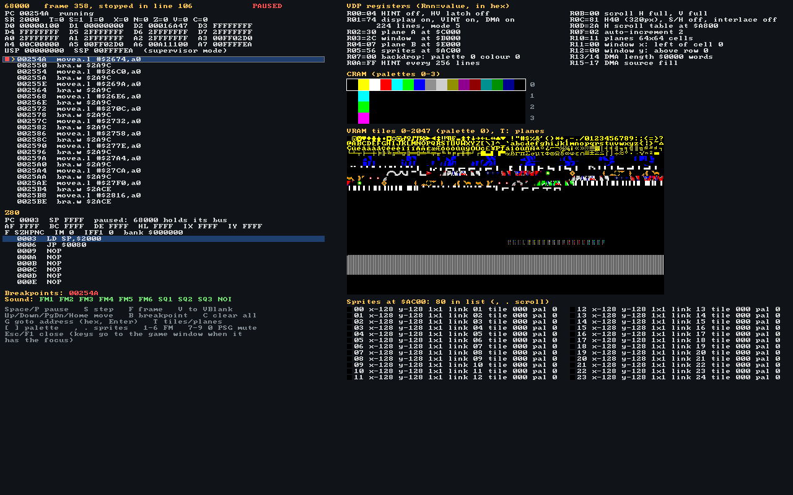
--break 254A --dump-debugger) : image 358, ligne 106, arrêt dans le gestionnaire. Plusieurs registres contiennent le même 2FFFFFFF.Tout est question de timing
Le premier VDP terminait chaque écriture instantanément. Le vrai fait attendre le processeur qu’une place se libère dans son propre travail, et les jeux sont écrits en conséquence.
Pendant qu’il dessine une ligne, le VDP lit la VRAM presque sans interruption : entrées des tables de noms, motifs des tuiles, valeurs de défilement, données des sprites. La VRAM n’a qu’un seul port : chaque ligne est donc divisée en une séquence fixe de créneaux mémoire, dont la plupart vont au moteur de rendu. Seuls quelques créneaux d’accès externes restent pour le 68000 et le moteur DMA.
slots.rs. En rouge : les 18 créneaux externes pendant que le VDP dessine, un tous les 16 pixels, dont un sur quatre est pris par le rafraîchissement de la DRAM, plus trois pendant le retour horizontal. En dessous : les 205 créneaux d’une ligne pendant le retour vertical, ou avec l’affichage éteint.Les écritures sur le port de données attendent dans une FIFO de quatre entrées qu’un créneau se présente. Quatre entrées absorbent une courte rafale, quelques entrées de palette pendant le retour horizontal, sans que le processeur s’en aperçoive. Une cinquième écriture bloque le 68000 jusqu’à ce qu’une entrée se libère, ce qui, en affichage actif, peut prendre quelques centaines de cycles d’horloge maître par mot. Les bits d’état 8 et 9 signalent que la FIFO est pleine ou vide, et les programmes soigneux les interrogent.
Le DMA existe en trois variantes. Un transfert du 68000 vers le VDP pousse des mots à travers la même FIFO et gèle le 68000 jusqu’à ce que le dernier soit passé. Les remplissages et les copies s’exécutent en arrière-plan tandis que le bit d’état 1 indique « occupé » ; une copie demande un créneau de lecture et un créneau d’écriture par octet, elle va donc deux fois moins vite qu’un remplissage. C’est pourquoi les jeux envoient leurs graphismes pendant le retour vertical ou avec l’affichage éteint : le même transfert y est environ onze fois plus rapide.
gase modélise tout cela avec une horloge paresseuse. Le VDP retient jusqu’où dans la ligne il a utilisé ses créneaux, et il est mis à jour avant chaque accès à un port et à la fin de chaque ligne. Quand rien n’est en file d’attente, le rattrapage se résume à avancer un compteur.
| Programme de test | Affichage actif | Affichage éteint |
|---|---|---|
| Lectures de FIFO-vide après 4 écritures en VRAM | 5 lectures | 1 lecture |
| Une rafale de 24 mots, chronométrée avec le compteur HV | 2 lignes | 0 ligne |
| Un DMA 68000 de 180 mots (données et registres vérifiés) | 19 lignes | 2 lignes |
| Lectures de DMA-occupé : remplissage contre copie de 4 Kio | — | 306 contre 611 |
L’émulateur est devenu plus précis, et les jeux SGDK ont démarré douze images plus tard.
SGDK, la boîte à outils C avec laquelle est construite la plupart des productions amateurs, efface les 64 Kio de VRAM au démarrage par un remplissage DMA, deux fois, affichage allumé. À la vitesse réelle des créneaux, chaque remplissage prend environ cinq images et demie : avec ce modèle, les logiciels SGDK finissent donc de démarrer environ douze images plus tard, comme sur une console. Deux empreintes de régression ont dû être revues. The Spiral montrait la même scène de particules à un point légèrement plus tardif de son animation, et sa nouvelle empreinte a été enregistrée après comparaison des captures d’écran. Le menu des motifs de la 240p Test Suite finissait désormais de se charger après l’appui de bouton scripté : l’appui est donc passé des images 330–335 aux images 345–350 ; l’image obtenue était identique au bit près à l’ancienne.
Un test de régression qui change n’est pas un échec si l’on peut expliquer le changement. Ces deux-là ont pu l’être à l’image près.
Sauvegardes, états et retour arrière
Trois façons de conserver la progression d’un jeu : la mémoire propre de la cartouche, un instantané de toute la console, et un anneau d’instantanés que l’on peut remonter.
Une sauvegarde d’état, c’est la console entière mise par écrit : chaque composant implémente un même trait, qui écrit ses champs dans un ordre fixe et les relit. Le format est du binaire little-endian brut, avec un nombre magique, une version et une empreinte du jeu, sans noms de champs ni schéma. Le chargement est transactionnel : un état endommagé laisse la console en cours d’exécution intacte.
Le retour arrière ne coûte alors presque rien à construire : un tampon circulaire de sauvegardes d’état, une prise toutes les quelques images, dépilées et chargées tant que vous maintenez la touche. Un état pèse environ 150 Kio : dix secondes d’historique tiennent donc dans quelques dizaines de mégaoctets. Pendant le travail sur les performances, enregistrer les tranches d’octets en une seule copie plutôt qu’octet par octet a rendu ces instantanés environ six fois moins coûteux.
La puce à deux fils
La plupart des cartouches sauvegardent dans une SRAM alimentée par pile, une mémoire ordinaire en $200000. Quelques dizaines utilisent plutôt une EEPROM série : une minuscule puce I²C dotée seulement d’une broche d’horloge et d’une broche de données, que le jeu pilote bit par bit en écrivant dans un verrou à une adresse qui dépend du fabricant de la carte. gase émule la puce front par front (conditions de début et de fin, bit d’acquittement à chaque neuvième cycle d’horloge, les deux modes d’adressage, écritures de page qui reviennent au début de la page) et tient une table indiquant quels jeux utilisent quelle puce et quel câblage, car rien dans la ROM ne le dit.
Un débogueur pour apprendre
Lire sur une machine est une chose. L’arrêter au milieu d’une image et regarder à l’intérieur en est une autre.
Appuyez sur F1 dans gase et une seconde fenêtre s’ouvre, montrant la console telle que la voient ses puces : les registres et le désassemblage des deux processeurs, les registres du VDP décodés par nom, les palettes, chaque tuile de la VRAM ou les cartes des plans, et la liste des sprites dans l’ordre de chaînage. Vous pouvez mettre en pause, exécuter une seule instruction 68000, aller jusqu’à la fin de l’image ou jusqu’au prochain retour vertical, poser des points d’arrêt, et couper chaque canal FM et PSG pour entendre comment la musique est arrangée.
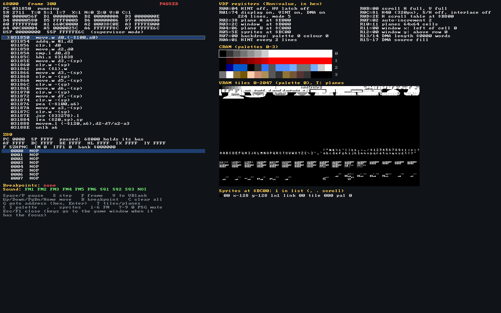
--dump-debugger. Il est dessiné dans un simple tampon de pixels avec une police 8 × 8 du domaine public, ce qui permet de l’enregistrer sans fenêtre et de le soumettre à des tests unitaires.- Registres du 68000, avec les drapeaux du registre d’état décodés.
- Désassemblage autour du compteur ordinal, avec points d’arrêt et curseur.
- Z80 : registres et code, et qui détient son bus.
- Son : quels canaux FM et PSG sont coupés.
- Registres du VDP par nom : adresses des plans, tailles, modes de défilement, DMA.
- CRAM : les quatre palettes de 16 couleurs.
- VRAM : les 2 048 tuiles, ou le plan A, le plan B, la fenêtre.
- Sprites dans l’ordre de chaînage : position, taille, tuile, palette, retournements.
Expériences à tenter
- Suivez le démarrage. Lancez
gase --debug game.binet appuyez sur S : la plupart des jeux lisent d’abord le registre de version enA10001, puis configurent le VDP (observez les registres décodés changer), puis effacent la RAM. - Trouvez le gestionnaire du retour vertical. Appuyez sur V, puis sur S : le 68000 prend l’interruption de niveau 6 et saute à l’adresse stockée en
$000078. La plupart des jeux y font toutes leurs mises à jour de la VRAM. - Démontez une image. Appuyez sur T pour passer des tuiles au plan A, au plan B et à la fenêtre, et comparez avec la liste des sprites.
- Écoutez les canaux. Coupez les canaux FM avec 1–6 et le PSG avec 7–0.
Rapide, et toujours lisible
Une seule passe guidée par le profilage a rendu gase de 1,5 à 1,9 fois plus rapide sans changer un seul bit de sortie, et sans rendre le code moins instructif.
Le travail a commencé par des mesures, pas par des intuitions. Deux chiffres ont été relevés pour chacune des cinq ROM de test : les images par seconde du banc d’essai sans affichage, ce que l’on perçoit, et le nombre d’instructions de l’hôte exécutées sur 300 images sous callgrind, qui ne dépend pas de ce que fait par ailleurs la machine et révèle des écarts d’une fraction de pour cent.
Le profil était sans ambiguïté. Le rendu par ligne de balayage absorbait 50–57 % de toutes les instructions : il recalculait le défilement, la cellule et le pixel pour chacun des 320 pixels de chaque plan, et les composait avec des boucles pleines de branchements. Venaient ensuite les fonctions d’opérandes du 68000, appelées sans être intégrées en ligne, puis le YM2612 qui calculait des canaux muets, le PSG qui avançait d’un pas à la fois, et le rééchantillonneur.
benchmarks/results/2026-10-10.csv.Lisez la référence pour comprendre le fonctionnement du matériel. Lisez le chemin rapide pour apprendre à le rendre véloce.
Telle a été la règle de chaque optimisation. La version directe reste dans le code comme définition documentée, le chemin rapide la nomme dans sa propre documentation, et un test unitaire prouve que les deux concordent, généralement sur des milliers d’entrées aléatoires. En outre, chaque changement devait laisser identiques au bit près les empreintes des images des ROM de test, l’audio enregistré et les vecteurs de test du processeur. Pas d’unsafe, et pas de SIMD écrit à la main : c’est le compilateur qui vectorise.
| Chemin rapide | Référence lisible | Égalité prouvée par |
|---|---|---|
render_plane, séries par rangée de tuiles | plane_pixel_reference, la formule pixel par pixel | 300 configurations aléatoires de VRAM, de VSRAM et de registres : tous les modes de défilement, toutes les tailles de plan, H32/H40, entrelacement |
pick_fast, arithmétique d’octets (SIMD) | pick, les règles de priorité | Toutes les valeurs de pixel du plan B |
Psg::run, de rechargement en rechargement | Psg::tick + Psg::output | 3 000 écritures de registre aléatoires, lots commençant en milieu de période |
| Saut des opérateurs éteints | Operator::eg_step, Channel::calc_operators | 200 opérateurs × 4 095 valeurs de compteur ; 2 000 canaux aléatoires |
| Lecture de ROM à une comparaison | Cartridge::read_word_mapped | ROM de taille impaire, mapper, EEPROM, SRAM dans et hors de la ROM |
| Tranches d’octets en une seule copie | Le comportement par défaut de State::save_slice | Sauvegardes d’état identiques à l’octet près |
Comment le travail a été fait
Chaque changement est arrivé sous la forme d’une pull request portant ses propres tests, un passage local de l’intégration continue et un compte rendu franc de ce qu’elle ne faisait pas.
Le travail se fait sur des branches feature/… et fix/… tirées de develop et fusionnées en retour par des pull requests ; main suit les versions publiées. Les puces ont été développées en parallèle sur leurs propres branches, ce que l’organisation en un crate par puce rendait indolore, et la description de chaque pull request indique ce qui a été testé, ce qui est approximatif, avec quelles autres pull requests ouvertes elle entrera en conflit et dans quel ordre les fusionner.
L’intégration continue (CI) tourne sur chaque pull request, les avertissements étant traités comme des erreurs :
cargo fmt --all --checkcargo clippy --workspace --all-targets, avec les lints de l’espace de travail, dontforbid(unsafe_code)cargo test --workspace: tests unitaires, programmes complets assemblés à la main, équivalence du débogueurcargo build -p gase --no-default-features, qui prouve que la version sans affichage n’a aucune dépendance externecargo doc --workspace --no-depsavec les avertissements comme erreurs : la documentation fait partie du produitcargo clippy -p gase-web --target wasm32-unknown-unknown, et clippy pour les cinq cibles de téléphonescripts/smoke-sdl.sh: le programme optimisé doit toujours tourner au bout de cinq secondes (chapitre 18)
Des workflows distincts construisent la version pour navigateur et les applications pour téléphone : un APK Android, et l’application iOS pour appareil et simulateur.
Une interface, puis trois plateformes à la fois
L’interface et les portages ont été le plus gros chantier après l’émulateur lui-même, et l’ordre comptait. L’interface indépendante de toute plateforme est venue en premier, sur sa propre branche, avec la coquille (shell) pour ordinateur (#22), car tout le reste allait reposer sur son contrat Platform. Dès que ce contrat s’est stabilisé, la version pour navigateur (#23) et les applications pour téléphone (#24) ont été construites en parallèle, chacune dans sa propre copie de travail, sur des branches empilées sur #22. Elles travaillaient dans des répertoires différents (crates/web et web/, crates/mobile et mobile/), si bien qu’elles ne pouvaient pas empiéter sur le code l’une de l’autre ; là où elles se rencontraient, dans le README et ARCHITECTURE.md, la seconde fusion a produit des conflits résolus à la main.
Chaque portage a aussi renvoyé des corrections. Le plantage du chapitre 18 a été découvert sur la branche de l’interface, et sa correction fusionnée dans les deux autres avant leur relecture ; le bogue du mode paysage du chapitre 14 a été découvert en prenant des images pour ce site. Deux fois, un commit de suivi est arrivé une minute après la fusion de sa pull request ; il est donc parti dans une nouvelle petite pull request au lieu d’être perdu : travailler vite, c’est vérifier le dernier mot après la fusion, et pas seulement avant.
gase a été écrit avec un assistant d’IA travaillant sur ses propres branches et pull requests ; une personne a relu et fusionné chacune d’elles. Chaque commit le dit à sa dernière ligne : Co-authored with AI.
Les grandes suites sont trop volumineuses pour chaque push (les seuls vecteurs du Z80 pèsent environ 1,3 Go) ; un second workflow les exécute donc chaque semaine et à la demande, avec la régression sur les ROM de test : chaque ROM tourne pendant un nombre fixe d’images avec des appuis scriptés, et une empreinte FNV-1a de l’image est comparée à une valeur qui n’a été enregistrée qu’après avoir regardé l’image.
| PR | Apport | Branche | Fusion (UTC) |
|---|---|---|---|
| #1 | Espace de travail, crate de sauvegarde d’état, étude de faisabilité | claude/vibrant-fermat-a8mz9q | 9 oct. 21:44 |
| #2 #5 | Le VDP : ports, DMA, synchronisation, rendu par ligne de balayage | feature/vdp | 9 oct. 22:02 |
| #3 #4 | Le Z80, qui passe SingleStepTests et ZEXALL | feature/z80-cpu | 9 oct. 22:02 |
| #8 | Le son : YM2612, PSG, rééchantillonneur, filtres | feature/sound | 9 oct. 22:06 |
| #9 | CI sur chaque pull request, vecteurs exécutés chaque semaine | feature/ci | 9 oct. 22:09 |
| #10 | Le 68000, validé par les vecteurs de MAME et de Tom Harte | feature/m68k-cpu | 9 oct. 22:44 |
| #11 | La console et le frontal : gase est jouable | feature/core-system | 9 oct. 22:44 |
| #12 | Erreurs d’adresse tolérantes, sur option | feature/lenient-address-errors | 9 oct. 23:44 |
| #13 | Sauvegardes en EEPROM série | feature/eeprom-saves | 10 oct. 06:59 |
| #14 | FIFO du VDP, créneaux d’accès, DMA précis dans le temps | feature/vdp-fifo-dma-timing | 10 oct. 07:02 |
| #15 | Le débogueur pour apprenants | feature/debugger | 10 oct. 07:03 |
| #16 | Correctif : laisser la FIFO se vider dans un test de couleur | fix/cram-rgb-test-fifo | 10 oct. 07:26 |
| #17 | Passe de performance et benchmarks/ | feature/performance | 10 oct. 08:36 |
| #18 | Version 0.1.0 vers main | release/v0.1.0 | 10 oct. 09:28 |
| #19 | ROM en ZIP : un décodeur DEFLATE maison | feature/zip-roms | 10 oct. 09:30 |
| #20 | Ce site, les coulisses | feature/making-of | 10 oct. 09:30 |
| #22 | L’interface, les commandes et la correction du plantage SDL | feature/app-ui | 10 oct. 14:03 |
| #23 | La version pour navigateur, une PWA installable | feature/web | 10 oct. 14:08 |
| #24 | Applications Android et iOS | feature/mobile | 10 oct. 14:10 |
| #25 | Correctif : Start et Mode hors de l’image en paysage | fix/touch-landscape-start-mode | 10 oct. 14:46 |
| #26 | Ce site : l’interface et les plateformes | feature/making-of-update | 10 oct. 14:47 |
| #27 | Version 0.2.0 vers main | release/v0.2.0 | 10 oct. 16:18 |
| #30 | Un workflow de publication pour chaque plateforme | feature/release-binaries | 10 oct. 16:29 |
| #31 | Correctif : SDL statique sous Windows et macOS | fix/release-cmake4 | 10 oct. 16:38 |
| #33 | Correctif : fichiers de publication pour les versions antérieures | fix/release-older-versions | 10 oct. |
Une interface, tous les écrans
Menus, réglages, navigateur de fichiers et commandes tactiles, écrits une seule fois et dessinés pixel par pixel, si bien que l’ordinateur, le navigateur et les téléphones exécutent tous le même code.
Jusqu’à la version 0.1, gase n’était qu’une ligne de commande et une fenêtre. Le rendre agréable à utiliser supposait des menus, un moyen de choisir un jeu, des réglages qui survivent à un redémarrage, des commandes réaffectables et, sur téléphone, des boutons sous les pouces. Écrire tout cela quatre fois, une par boîte à outils de plateforme, aurait quadruplé le code qu’un apprenant doit lire. Tout vit donc dans un seul crate, gase-app, sans dépendances ni entrées-sorties, exactement comme le cœur.
L’application se dessine elle-même. À chaque image, elle peint ses menus dans un simple tampon de pixels avec sa propre police bitmap, comme le fait le débogueur. Une plateforme n’a qu’à afficher ce tampon, jouer le son et signaler les touches, les boutons de manette et les doigts. L’interface est en mode immédiat : il n’y a aucun objet widget à garder synchronisé. À chaque image, l’écran courant est dessiné à partir des réglages et de l’état de la console, et les entrées sont traitées au fil du dessin.
Le contrat de plateforme
Tout ce qu’une plateforme doit fournir tient dans un seul trait, Platform : lire et écrire un fichier nommé, lister un dossier, demander une ROM, donner l’heure. Tout ce qu’elle transmet à l’application est un Event : une touche, un bouton ou un axe de manette, un pointeur, un fichier déposé, le passage de l’application en arrière-plan. Tout ce que l’application demande en retour passe par Requests : passer en plein écran, quitter, ouvrir le sélecteur de documents du système. Une coquille est le code qui tient cette promesse sur une plateforme, et il y en a trois : SDL2 pour les ordinateurs et les téléphones, et une en WebAssembly pour les navigateurs.
Toutes les manettes à la fois
Le clavier, autant de manettes que l’on veut et l’écran tactile sont associés en même temps aux deux manettes de la console. Chaque périphérique garde son propre ensemble de boutons enfoncés, et la console en voit l’union. Rien n’est à basculer, et relâcher une touche ne peut pas relâcher un bouton qu’une manette maintient encore. Chaque touche et chaque bouton de manette peut être réaffecté pour les deux joueurs.
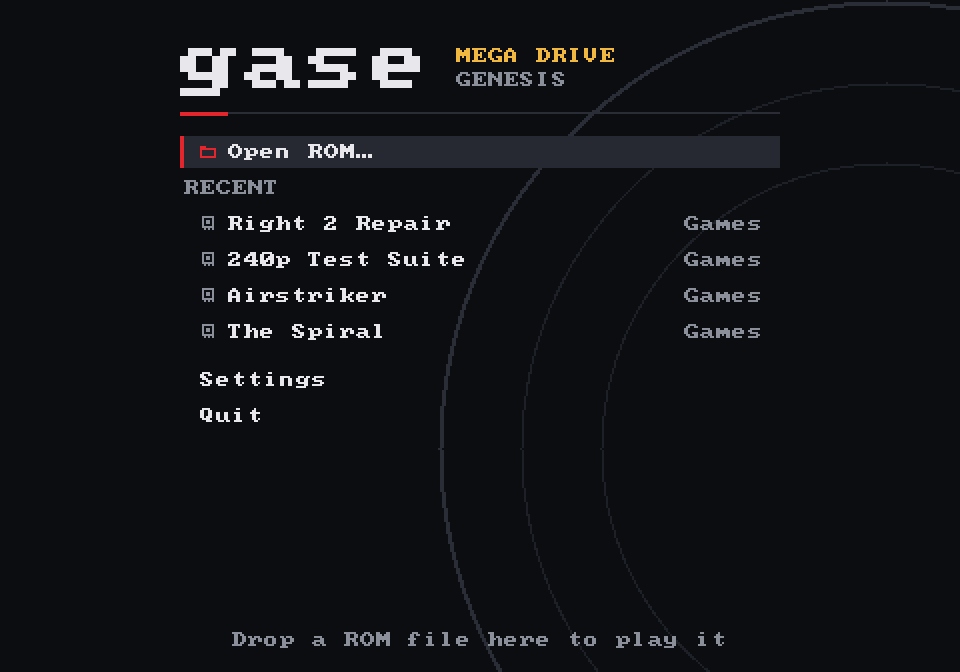
gase --dump-ui. Right 2 Repair, en tête de la liste des jeux récents, est un fichier .zip (chapitre 15). La même option dessine n’importe quel écran de l’application sans ouvrir de fenêtre : c’est ainsi qu’ont été faites toutes les images de ce chapitre, et c’est ainsi que les tests de l’application examinent les écrans.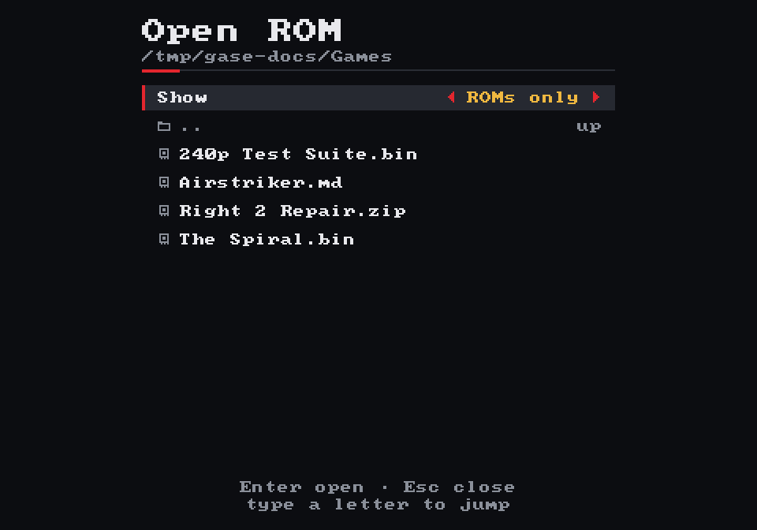
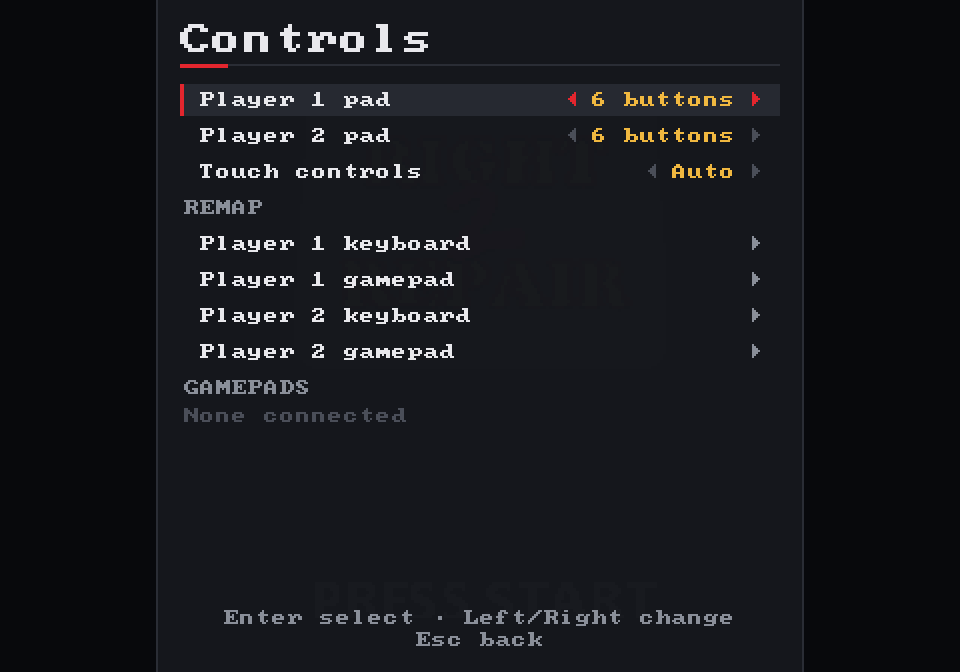
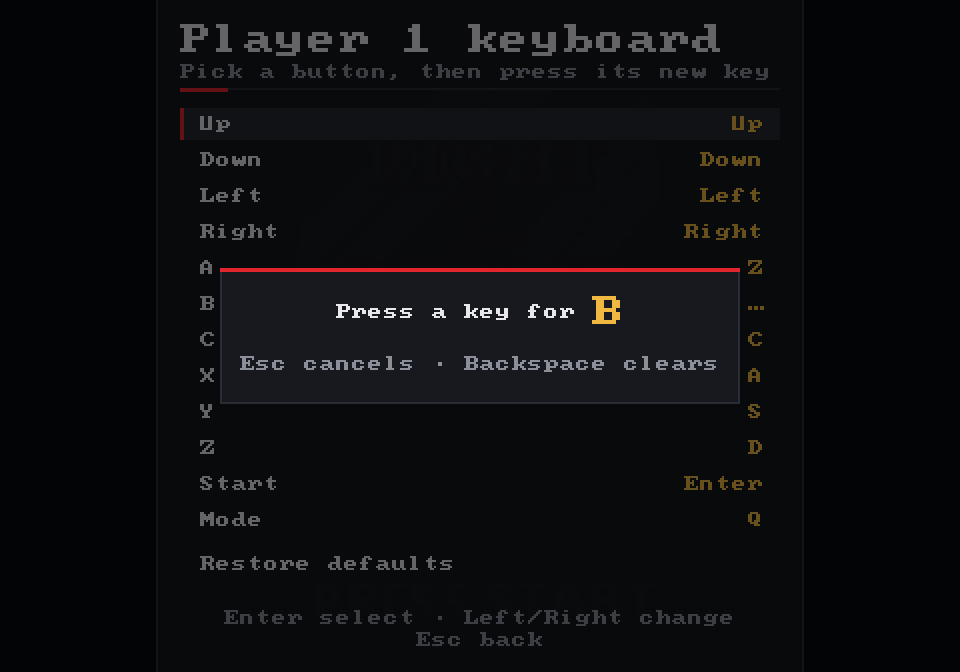
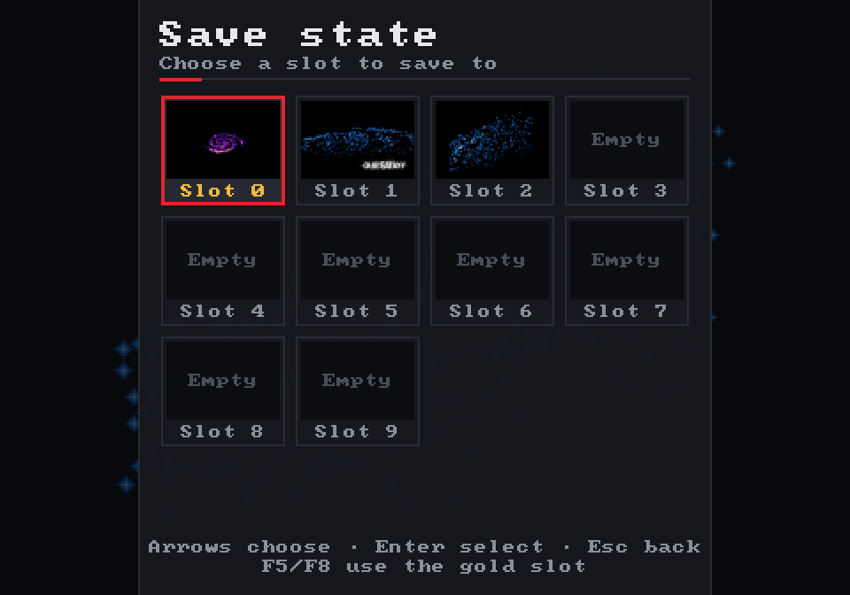
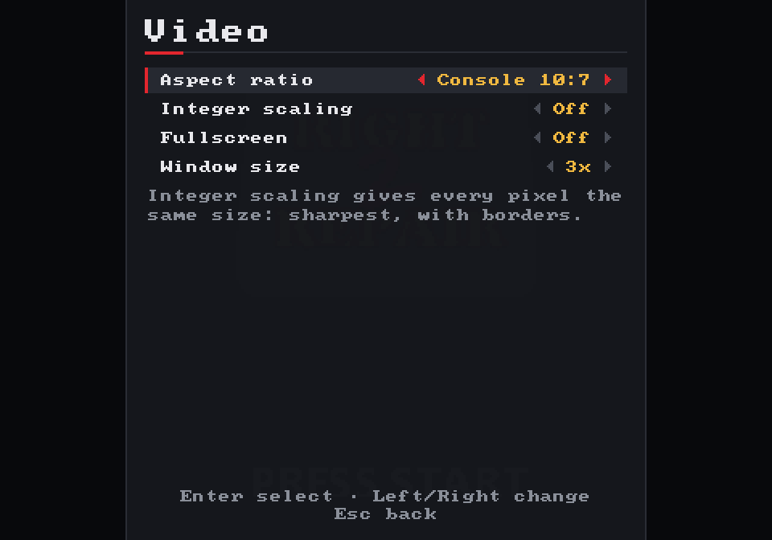
Des pouces sur le verre
La manette tactile appartient elle aussi à l’application : elle est donc identique sur Android, sur iOS et dans un navigateur mobile. Chaque doigt est suivi séparément dans une petite table des doigts que possède la manette. Un doigt qui se pose sur la croix directionnelle continue de la diriger même s’il glisse au-dehors. Un doigt posé entre deux boutons appuie sur les deux, si bien qu’un seul pouce peut tenir B et C. Toutes les tailles découlent de celle de l’écran : le même code sert un petit téléphone comme une tablette.
La disposition obéit avant tout à une règle : ne jamais couvrir le jeu. La rédaction de ce chapitre y a révélé un bogue. La capture en paysage ci-dessous montrait Start et Mode dessinés au milieu du bord inférieur, en plein sur le « PRESS START » de Right 2 Repair. Le commentaire du code annonçait « corners in landscape » (dans les coins, en paysage), mais le code ne le faisait pas. Un test en échec est venu d’abord, puis la correction, dans la pull request #25. Les deux boutons se trouvent désormais dans les bordures noires, au-dessus de chaque pouce.
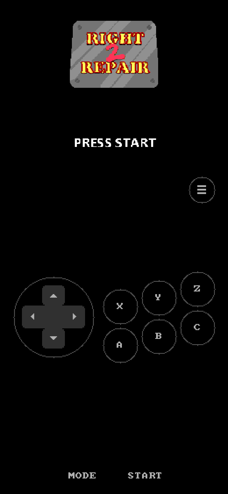
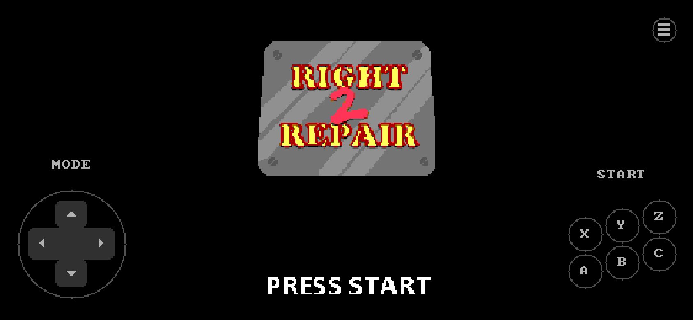
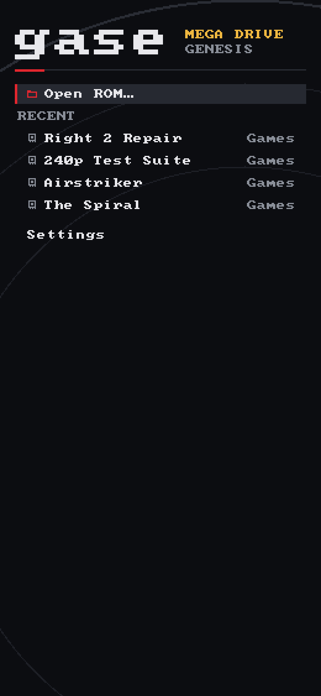
Les écrans de téléphone sont dessinés à deux pixels par point et montrés ici à la taille d’un téléphone de 390 points de large. Ils proviennent de gase --mobile --dump-ui, qui exécute la disposition de la coquille pour téléphone sur un ordinateur.
Ouvrir un fichier ZIP
La plupart des collections de ROM sont zippées. Les lire exige un décompresseur, et en écrire un est une petite leçon sur le fonctionnement de presque tous les fichiers compressés.
Recourir à une bibliothèque aurait été la voie facile. Mais la règle du minimum de dépendances avait tenu jusque-là, et DEFLATE, la compression des fichiers ZIP (ainsi que de gzip et de PNG), se révèle très instructif : environ 900 lignes, hors tests, qui combinent deux idées anciennes. gase-zip lit les archives ZIP, décompresse les flux DEFLATE et vérifie les sommes CRC-32. Quand Cartridge::from_bytes voit les octets PK\3\4 au début d’un fichier, il ouvre l’archive et prend la ROM qu’elle contient. Toutes les plateformes obtiennent la prise en charge du ZIP grâce à cette seule vérification.
La première idée est LZ77. Au lieu de stocker un texte déjà vu, le compresseur écrit « reculez de distance octets et copiez longueur octets à partir de là ». La propre sortie du décompresseur sert de dictionnaire. Une copie peut chevaucher ce qu’elle est en train d’écrire : distance 1, longueur 100 répète un octet cent fois. Essayez :
La seconde idée est le codage de Huffman : les symboles fréquents reçoivent des motifs de bits courts, les rares des motifs longs. DEFLATE réunit les octets littéraux, les longueurs de correspondance et un marqueur de fin de bloc dans un alphabet de 286 symboles, et les distances dans un second. Chaque bloc utilise soit un code fixé par la norme, soit envoie d’abord son propre code. Pour gagner de la place, il envoie ce code sous forme de liste de longueurs en bits, elle-même compressée avec un troisième code de Huffman. Les commentaires de crates/zip/src/inflate.rs décortiquent tout cela table par table, et méritent la lecture même si vous ne touchez jamais à un émulateur.
Décoder bit par bit, c’est la référence lisible. Le chemin rapide décode la plupart des codes en une seule consultation des 10 bits suivants, et des tests vérifient que les deux donnent des résultats identiques, erreurs comprises, sur des flux produits par zlib et sur des flux aléatoires : encore la règle du chapitre 12. Le chemin rapide décompresse une ROM de 4 Mio en environ 19 ms.
Rust dans un navigateur
Le même émulateur et la même interface compilés en WebAssembly, sans rien entre les deux : ni générateur de liaisons, ni bundler, seulement quelques modules JavaScript écrits à la main.
La manière habituelle de mettre du Rust dans une page web passe par wasm-bindgen, qui génère la colle entre les deux langages. Cela fonctionne bien, mais cache précisément ce qu’un apprenant voudrait voir. gase-web s’en passe donc. Le module est compilé pour wasm32-unknown-unknown et exporte une vingtaine de fonctions simples qui prennent et renvoient des nombres. La page lui fournit en retour neuf fonctions : lire et écrire un fichier, envoyer du son, faire une requête. Six modules JavaScript, chargés tels qu’ils sont écrits, font le reste.
Jouez à gase dans votre navigateur
Une seule mémoire partagée
La mémoire d’un module WebAssembly est un unique ArrayBuffer que JavaScript peut voir, et un pointeur Rust n’est qu’un décalage dans ce tampon. Aucune image, aucun son ne franchit donc jamais la frontière par copie. Rust renvoie vec.as_ptr() sous forme de nombre, et la page enveloppe ces octets dans un tableau typé qu’elle confie au canvas. Après chaque image, le module remplit une description d’image de dix-sept mots, qui indique à la page où se trouve l’image, quelle est sa taille, où la dessiner et à quel rythme avancer. La page la lit à travers un seul Uint32Array, comme une struct C.
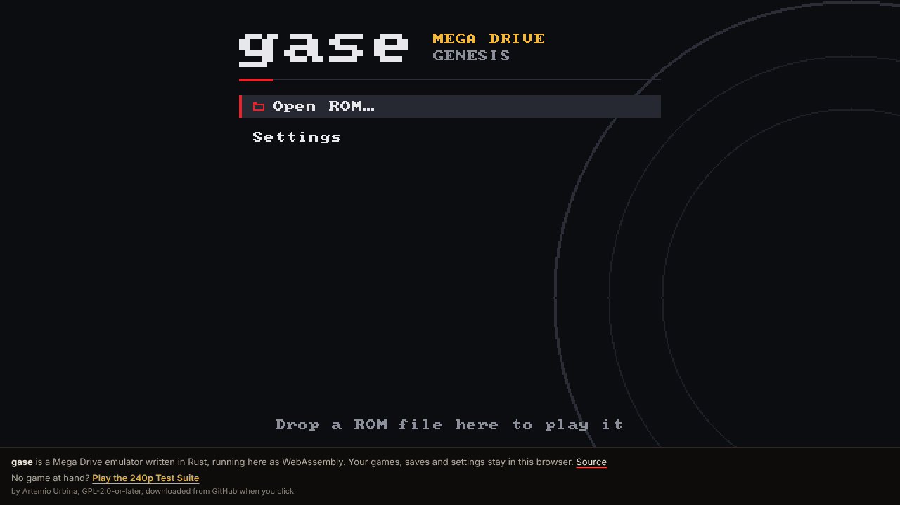
Trois choses que les navigateurs compliquent
- Sauvegarder. L’application s’attend à lire un fichier et à l’obtenir aussitôt, mais l’IndexedDB du navigateur répond plus tard. Au démarrage, la page copie donc en mémoire tout ce qui est stocké. Les lectures se font dans cette copie, et les écritures partent vers la base en arrière-plan, une transaction par image.
- Le son. L’audio est joué sur un fil d’exécution temps réel, dans un
AudioWorklet. Le moyen le plus rapide de l’alimenter est un tampon circulaire en mémoire partagée, mais les navigateurs ne le permettent qu’aux pages servies avec des en-têtes d’isolation particuliers, que GitHub Pages ne sait pas envoyer. La page sait donc aussi poster des blocs d’échantillons, et c’est la voie qu’emprunte ce site. - Le rythme. Un navigateur redessine selon sa propre horloge. Chaque rafraîchissement doit temps écoulé × 59,92 images émulées, le reste étant reporté. La file audio n’ajoute ou ne saute une image que lorsqu’elle s’écarte de plus de deux images de sa cible. Une première version, qui enchaînait les images jusqu’à remplir la file, hoquetait entre zéro et deux images par rafraîchissement.
Rust sur un téléphone
SDL2 tourne déjà sur Android et iOS : les applications pour téléphone reprennent donc la coquille de l’ordinateur. Reste à savoir qui appelle main.
Aucun des deux systèmes de téléphone ne lance un programme en appelant main. Sur Android, la machine virtuelle Java démarre une activité. L’SDLActivity de SDL charge deux bibliothèques natives, libSDL2.so et libmain.so, puis appelle la fonction C SDL_main sur un fil d’exécution dédié. Sur iOS, un minuscule main en Objective-C passe la main à UIKit, et une fois l’application lancée, SDL appelle la même SDL_main. Le crate gase-mobile exporte exactement cette fonction : compilé en bibliothèque partagée pour Android, et en bibliothèque statique liée à l’application iOS.
À partir de là, c’est le programme pour ordinateur avec une autre Shell. Les fichiers vivent dans le stockage privé de l’application, les ROM viennent du sélecteur de documents du système ou de « Ouvrir avec », l’écran pivote, et il n’y a pas de bouton Quitter. Copier un fichier choisi dans l’application demande quelques dizaines de lignes de Java et d’Objective-C. Cette colle renvoie ensuite le chemin de la copie sous la forme d’un banal événement SDL « fichier déposé », que la coquille savait déjà traiter sur ordinateur.
Un téléphone peut vous tuer à tout instant
Un programme pour ordinateur tourne jusqu’à ce qu’on le ferme. Une application de téléphone envoyée en arrière-plan peut ne jamais être réveillée. Aussi, quand gase passe en arrière-plan, il enregistre aussitôt la RAM sauvegardée sur pile du jeu et les réglages, ouvre le menu de pause, cesse de dessiner et s’endort sans consommer de processeur. Au retour, il jette le son périmé et reprend. Si le système lui retire le périphérique graphique, SDL le signale et les textures sont recréées.
Un plantage dans le code des autres
L’espace de travail interdit le code unsafe. La nouvelle fenêtre plantait pourtant sur une erreur de segmentation, mais seulement dans les compilations optimisées.
La compilation de débogage de la nouvelle interface fonctionnait. La compilation optimisée mourait sur SIGSEGV moins d’une seconde après l’ouverture de sa fenêtre. Tous les tests unitaires passaient, car aucun n’ouvre de fenêtre. gdb situait le plantage dans SDL, pendant une copie de pixels vers une texture. valgrind fut plus précis : une valeur non initialisée créée par une allocation sur la pile, suivie d’écritures dans une mémoire qui n’appartenait à personne.
L’envoi d’une image au GPU passait par l’enveloppe sûre de sdl2, Texture::with_lock(rect, …). À l’intérieur de ce crate, cela ressemble à ceci :
let (rect_raw_ptr, height) = match rect.into() {
Some(ref rect) => (rect.raw(), rect.height() as usize),
None => (ptr::null(), q.height as usize),
};
// `rect.into()` was a temporary: it is gone here, and rect_raw_ptr points
// at the stack slot where it used to be.
let ret = sys::SDL_LockTexture(self.raw, rect_raw_ptr, &mut pixels, &mut pitch);sdl2 0.37, render.rs. L’Option<Rect> ne vit que jusqu’à la fin de l’instruction let, mais un pointeur brut vers elle lui survit. Dans une compilation de débogage, l’ancienne valeur s’y trouve généralement encore. L’optimiseur réutilise l’emplacement de pile : SDL lit alors un rectangle aberrant et calcule une adresse loin hors de la texture.Le correctif tient en un mot : verrouiller toute la texture avec None, qui transmet un pointeur nul et ne demande aucune valeur temporaire. SDL renvoie le même tampon dans les deux cas, cela ne coûte donc rien. valgrind s’est tu. Le commentaire de documentation de upload dans crates/gase/src/sdl.rs consigne pourquoi le rectangle ne doit jamais revenir.
Corriger le plantage ne suffisait pas : il fallait aussi qu’il soit impossible de le manquer la prochaine fois. scripts/smoke-sdl.sh lance le programme optimisé avec les pilotes vidéo et audio factices de SDL, et échoue s’il ne tourne plus au bout de cinq secondes. Il a d’abord été essayé sur la compilation défectueuse (code de sortie 139, une erreur de segmentation) avant qu’on lui fasse confiance sur la version corrigée. Il tourne désormais en CI sur chaque pull request.
Livrer sur toutes les plateformes
Compiler gase sur sa propre machine est une leçon. Le télécharger ne devrait pas en être une. Un seul workflow transforme une étiquette de version en un programme pour chaque plateforme.
Quand une version est publiée sur GitHub, le workflow Release récupère le commit étiqueté et le compile partout à la fois : sur des machines Linux, Windows et macOS pour les programmes pour ordinateur, en WebAssembly pour le navigateur, et via le workflow mobile du chapitre 17 pour Android et iOS. Une dernière tâche rassemble les fichiers, ajoute leurs sommes de contrôle, reprend la section de CHANGELOG.md consacrée à cette version comme notes de version et joint le tout. GitHub ajoute de lui-même le code source.
Le workflow peut aussi être lancé à la main avec un nom d’étiquette ; il crée alors l’étiquette et la version publiée. C’est ainsi que 0.2.0 et l’ancienne 0.1.0 ont reçu leurs fichiers après coup ; 0.1.0 est antérieure au code pour navigateur et téléphone, si bien que le workflow regarde ce que contient le commit et ne compile que pour ces plateformes.
| Fichier (0.2.0) | Pour | Taille |
|---|---|---|
| linux-x86_64.tar.gz | Linux, compilé sur Ubuntu 22.04 pour que les systèmes plus anciens puissent aussi l’exécuter | 2,5 Mo |
| windows-x86_64.zip | Windows 10 et 11 | 1,1 Mo |
| macos-universal.tar.gz | Apple silicon et Intel en un seul programme, assemblé avec lipo | 2,3 Mo |
| web.zip | La version pour navigateur, prête à servir | 0,2 Mo |
| android.apk | Téléphones Android, pour une installation manuelle | 3,3 Mo |
| ios-unsigned.ipa | iPhone, une fois signé avec un compte de développeur | 0,8 Mo |
Rien d’autre à installer
Le programme pour ordinateur a besoin de SDL2 pour sa fenêtre, son son et ses manettes, et demander aux joueurs d’installer d’abord une bibliothèque serait un piètre accueil. Il se trouve que le crate sdl2-sys embarque le code source complet de SDL, et deux features lui font compiler ce source avec CMake puis le lier à l’exécutable : cargo build --features sdl2/bundled,sdl2/static-link. Le résultat ne dépend de rien d’autre que du système d’exploitation. Sur Linux, SDL trouve toujours X11 ou Wayland et le système audio au démarrage, comme il l’a toujours fait, de sorte qu’un seul fichier tourne sur n’importe quel bureau.
Chaque compilation pour ordinateur est ensuite copiée seule dans un dossier vide puis lancée : s’il lui fallait encore une bibliothèque SDL, le système refuserait de l’exécuter. Sur Linux, elle doit en outre garder sa fenêtre ouverte pendant cinq secondes.
Trois surprises, découvertes avant qu’elles ne comptent
Sur les pull requests qui le modifient, le workflow compile tous les fichiers sans rien publier : il a donc été testé bien avant qu’une version publiée en dépende. Linux a fonctionné du premier coup. Windows et macOS ont échoué trois fois, chaque échec assez précis pour être corrigé en quelques lignes :
| Où | Ce qu’a dit la compilation | Pourquoi, et le correctif |
|---|---|---|
| Windows, macOS | Compatibility with CMake < 3.5 has been removed | Les machines ont désormais CMake 4, et les fichiers de compilation de SDL 2 réclament encore CMake 3.0. Définir CMAKE_POLICY_VERSION_MINIMUM=3.5 indique à CMake que cela convient. |
| Windows | unresolved external symbol RegOpenKeyExW | SDL lit le registre, qui se trouve dans advapi32.lib, et le crate oublie de le lier quand SDL est lié statiquement. Un argument pour l’éditeur de liens l’ajoute. |
| macOS | Undefined symbols: ___isPlatformVersionAtLeast | Le code de manette de SDL demande « ce macOS est-il assez récent ? », ce qui se compile en un appel à la bibliothèque d’exécution propre à clang. Un programme C reçoit cette bibliothèque automatiquement ; un programme Rust est lié sans elle. Nommer le fichier règle le problème. |
Un jeu qui ne fait rien, pour toujours
Le test de cinq secondes a besoin de quelque chose à exécuter, et le programme 0.1.0 refuse même de démarrer sans jeu. Télécharger une ROM de test à chaque compilation ferait dépendre les versions du serveur de quelqu’un d’autre ; le workflow écrit donc la sienne, longue d’un kilo-octet, en une seule ligne de Python :
offset bytes meaning
000000 00 FF FE 00 initial stack pointer: $FFFE00, in work RAM
000004 00 00 02 00 initial program counter: start at $000200
000100 53 45 47 41 "SEGA", where the header says it should be
000200 60 FE BRA.S $200: branch to this very instruction60 est le branchement court du 68000, et FE sa distance : −2 octets, comptés depuis la fin de l’instruction de deux octets, ce qui retombe sur l’instruction elle-même. La console l’exécute indéfiniment, la fenêtre reste ouverte, et le test passe. gase --trace le montre : 000200 bra.s $200, encore et encore.Les fichiers pour téléphone s’accompagnent d’une réserve que répètent les notes de version. Android installe l’APK après un avertissement, car il est signé avec une clé de développement et non une clé de boutique. Un iPhone n’installe rien qui n’ait été signé par un développeur enregistré : le .ipa est donc un point de départ pour qui possède un tel compte, ou un outil qui signe avec le sien.
La suite
Le cœur n’a toujours aucune idée de ce qu’est une fenêtre. Tout ce qui suit peut être bâti par-dessus, et chaque élément est une leçon à part entière.